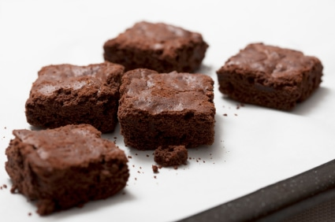

Brownies

Descripción
¡Una clasica delicia!
Ingredientes
- ½ taza de azúcar blanca
- 2 cucharadas de mantequilla
- 2 cucharadas de agua
- 1 ½ tazas de chispas de chocolate semidulce
- 2 huevos
- ½ cucharadita de extracto de vainilla
- ⅔ taza de harina para todo uso
- ¼ de cucharadita de bicarbonato de sodio
- ½ cucharadita de sal
Pasos:
- Precaliente el horno a 325 grados F (165 grados C). Engrasa un molde cuadrado de 8x8 pulgadas.
- En una cacerola mediana, combine el azúcar, la mantequilla y el agua. Cocine a fuego medio hasta que hierva. Retire del fuego y agregue las chispas de chocolate hasta que se derrita y esté suave. Mezcle los huevos y la vainilla. Combine la harina, el bicarbonato de sodio y la sal; agregue a la mezcla de chocolate. Extender uniformemente en el molde preparado.
- Hornea de 25 a 30 minutos en el horno precalentado, hasta que se formen los brownies. ¡No hornees demasiado! Enfriar en la sartén y cortar en cuadrados.